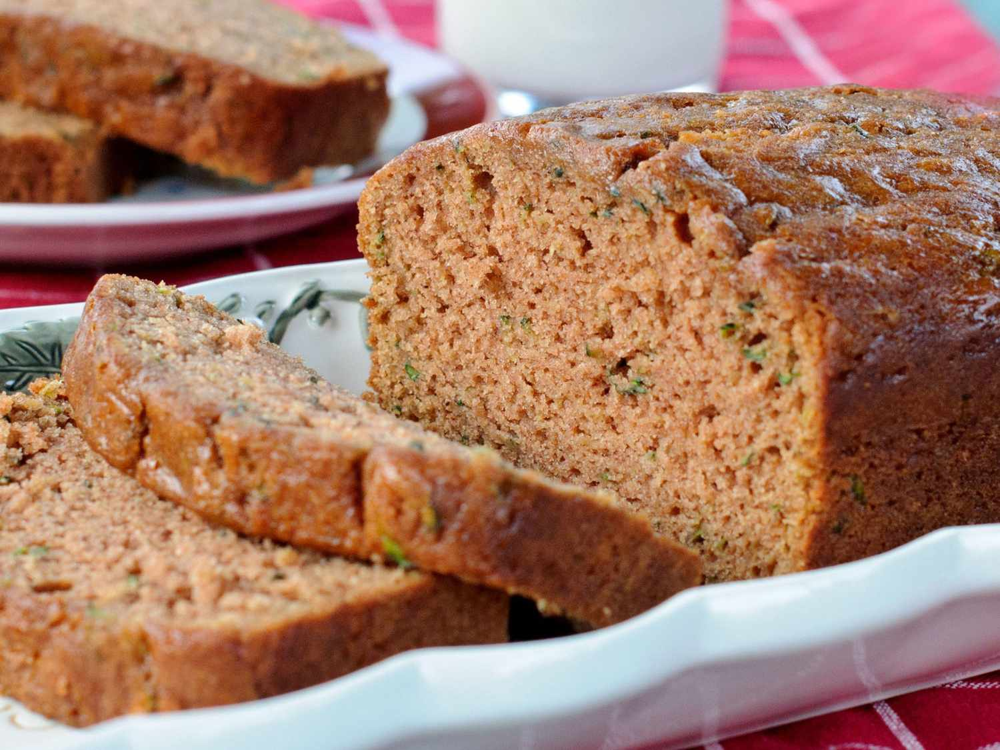

Zucchini Bread

Description
This zucchini bread is really, really good and moist —
my kids eat it as quickly as I can make it!
This recipe makes two loaves but it freezes well and will keep in the refrigerator for weeks.
Ingredients
- Flour: This traditional zucchini bread recipe starts with all-purpose flour, which creates structure in the batter.
- Salt: A teaspoon of salt enhances the overall flavor, but it won’t make the zucchini bread taste salty.
- Leaveners: Baking powder and baking soda act as leaveners, which means they help the zucchini bread rise.
- Cinnamon: Ground cinnamon lends warmth and depth of flavor.
- Eggs: Three whole eggs add moisture and help bind the batter together.
- Oil: A neutral oil, such as vegetable oil, adds even more moisture.
- Sugar: White sugar sweetens things up. Some reviewers say they prefer to use a blend of white and brown sugars.
- Vanilla: Vanilla extract enhances the overall flavor of the zucchini bread. Use store-bought or homemade vanilla extract.
- Zucchini: You'll need two cups of freshly grated zucchini.
- Nuts: This recipe calls for walnuts, but you can use pecans (or the nuts of your choice) if you wish.
Steps
- Sift the dry ingredients together.
- Beat the wet ingredients together.
- Beat the dry mixture into the wet mixture.
- Stir in the grated zucchini and nuts.
- Pour the batter into the prepared pans.
- Bake until a toothpick comes out clean.
Discover new recipes